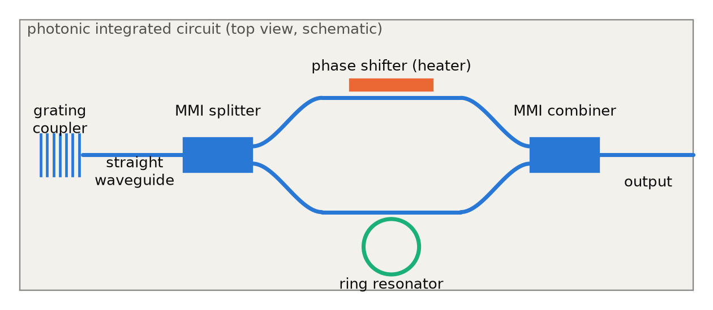
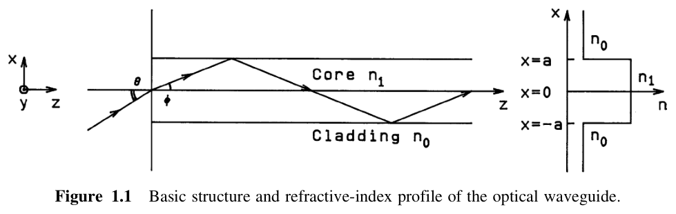
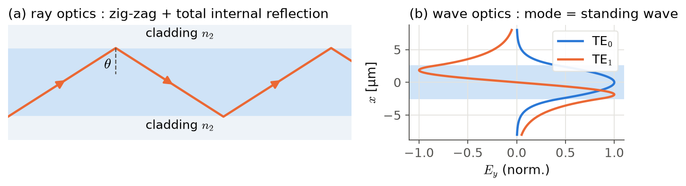
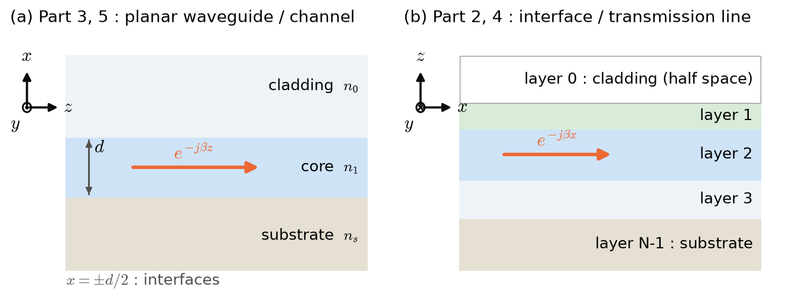

Part 1 · Introduction & Notation
Optical waveguide theory: from guided waves to the effective index method
Course goal: starting from how a single plane wave reflects at an interface, you can compute the modes and effective indices of planar waveguide, multilayer, and 2D cross-section waveguides yourself.
Course objectives
- Understand the concepts of guided waves and boundary conditions.
- Find the modes of planar waveguide / multilayer waveguides, plot their field profiles, and obtain their effective indices.
- Analyze multilayer structures, including leaky modes, with the transmission-line (TL) approach.
- Find complex effective indices with numerical methods such as the downhill simplex.
- Obtain the effective index of channel / ridge / rib waveguides with the effective index method (EIM).
- Find the single-mode condition of a rib waveguide with EIM, and understand why a rib with a large cross-section can still be single-mode: its higher-order vertical modes leak sideways.
What does a waveguide do in a PIC?
A photonic integrated circuit (PIC) sends light along narrow paths on a chip. Along the way it splits, combines, phase-shifts, and filters the light. That "path" is the waveguide. Every device in the figure below (grating coupler, MMI splitter, phase shifter, ring resonator) works according to the effective index \(n_{\rm eff}\) and the field shape with which the mode propagates in the waveguide.

Two views of guiding
Ray optics. Light is treated as straight rays. Light is trapped by repeated total internal reflection (TIR) at the core–cladding interfaces. If we include the phase change on reflection (Goos–Hänchen phase), the condition "the phase after one round trip of the ray is an integer multiple of \(2\pi\)" gives discrete modes (Part 8).
Wave optics. Maxwell's equations are solved in each layer and joined by boundary conditions. A mode is a standing wave in the transverse direction and decays evanescently in the cladding. This view handles field distribution, power, orthogonality, and even leaky modes (Part 9 onward).


Coordinate systems
Planar waveguide and EIM analyses usually take z as the propagation direction and x as the interface normal. Fresnel coefficients and transmission lines usually take x as the direction along the interface (propagation direction) and z as the interface normal. Forcing a single convention would make it hard to compare with the standard equations of each field. So this lecture uses the coordinates common in each field, chapter by chapter, and states the correspondence explicitly. In either system, \(y\) is the direction in which the structure is uniform, and TE (s-pol) always has only \(E_y\).

| Role | Part 2 Fresnel (2.1–2.7) | Part 3, 5 planar waveguide / EIM, Part 2.8 | Part 4 transmission line |
|---|---|---|---|
| Propagation direction (phase \(e^{-j\beta\,\cdot}\)) | \(x\) (wavenumber along interface \(k_x\)) | \(z\) | \(x\) |
| Interface normal (transverse) | \(z\) | \(x\) | \(z\) (up is +) |
| Uniform direction | \(y\) | \(y\) | \(y\) |
| Transverse wavenumber | \(k_{z}=k_0n\cos\theta\) | \(\kappa\) (core), \(\gamma_s,\gamma_0\) (cladding) | \(k_{zu}=k_0\sqrt{n_u^2-n_{\rm eff}^2}\) |
| TE (s) components | \(E_y, H_x, H_z\) | \(E_y, H_x, H_z\) | \(E_y, H_x, H_z\) |
| TM (p) components | \(H_y, E_x, E_z\) | \(H_y, E_x, E_z\) | \(H_y, E_x, E_z\) |
| Normal E/H component | TE: \(H_z\), TM: \(E_z\) | TE: \(H_x\), TM: \(E_x\) | TE: \(H_z\) is the propagation-direction component |
Caution. The same name \(H_x\) is the normal component in Part 3 (\(=-\tfrac{\beta}{\omega\mu_0}E_y\)), but the tangential component at the interface in Part 4 (\(=-I\), the current). When you carry equations over, always read them with \(x\leftrightarrow z\) swapped.
Variables normalized by the half-width \(a=d/2\): \(u=\kappa a=\kappa d/2\), \(w=\gamma_s d/2\), \(w'=\gamma_0 d/2\), normalized frequency \(v = V/2\) (used in the graphical solution of Part 10).
Time convention and phasors
Every real field is written as the real part of a phasor.
In this convention, a wave traveling in \(+z\) is \(e^{-jkz}\). With loss, \(\beta=\beta'-j\alpha\) (\(\mathrm{Im}(\beta)<0\)). A decaying evanescent field \(e^{-jk_zz}\) has \(\mathrm{Im}(k_z)<0\). Some physics and optics literature uses \(e^{-i\omega t}\) (field \(\propto e^{i(\beta x-\omega t)}\)), so such equations must be read with \(i\to -j\) (Part 15).
Numerical tools
All computations in this lecture were done in Python (NumPy, SciPy, matplotlib, and mpmath where high precision is needed). Porting to MATLAB keeps the same structure.
| Tool | Where it is used | Key idea |
|---|---|---|
| Bisection | Real \(n_{\rm eff}\) (guided mode) | Halve the interval where the sign changes. Slow but always converges (Part 20) |
| Newton–Raphson | Refining real/complex roots | \(x_{k+1}=x_k-f(x_k)/f'(x_k)\). Fast but sensitive to the initial value (Part 20) |
| Muller | Complex \(n_{\rm eff}\) (leaky mode) | The next point is a root of the quadratic through three points. No derivative needed (Part 21) |
| Argument principle | Checking the number of roots | Change of \(\arg f\) around a closed contour / \(2\pi\) = number of zeros inside (Part 21) |
| Downhill simplex | Complex \(n_{\rm eff}\) (leaky mode) | Find the minimum of \(|f|\) by reflecting, expanding, and contracting a triangle. No derivative needed (Part 22) |
Course structure and exercises
| Exercise | Content | Location |
|---|---|---|
| Exercise 1 | Modes of a symmetric planar waveguide (mode count, \(n_{\rm eff}\), E-field profile) | Part 14 |
| Exercise 2 | TE modes of a 5-layer structure (mode count, \(n_{\rm eff}\), E-field profile) and the leakage loss into the Si substrate versus buffer thickness | Part 19 |
| Exercise 3 | Core index that keeps a buried silica channel single-mode (EIM) | Part 25 |
| Exercise 4 | Etch depth that keeps a polymer rib single-mode (EIM) | Part 27 |
Each Exercise is a boxed problem: answers entered in the box are graded automatically. For E-field profiles you upload your own plot, which is shown next to the answer image, and you judge the match yourself. Below each box are problem-solving hints and the folded full solution.
Part 1 · Introduction & Notation
광도파로 이론: guided wave에서 effective index method까지
강의목표: 평면파 하나가 계면에서 어떻게 반사되는지에서 출발해, planar waveguide·다층·2D 단면 waveguide의 mode와 effective index를 직접 계산할 수 있다.
강의 목적
- Guided wave와 boundary condition의 개념을 이해한다.
- Planar waveguide / multilayer waveguide에 존재하는 mode를 찾고, field profile을 plot하고, effective index를 구한다.
- Leaky mode를 포함한 다층 구조를 transmission-line (TL) approach로 해석한다.
- 복소 effective index를 downhill simplex 같은 수치 해법으로 찾는다.
- Effective index method (EIM)로 channel / ridge / rib waveguide의 effective index를 구한다.
- Rib waveguide의 단일모드 조건을 EIM으로 구하고, 단면이 커도 세로 고차 mode가 옆으로 새어 단일모드가 되는 원리를 이해한다.
Waveguide는 PIC에서 무엇을 하는가
Photonic integrated circuit (PIC)는 빛을 칩 위의 좁은 길로 보내면서 나누고, 합치고, 위상을 바꾸고, 걸러 냅니다. 그 "길"이 waveguide입니다. 아래 그림의 모든 소자(grating coupler, MMI splitter, phase shifter, ring resonator)는 결국 waveguide 안의 mode가 어떤 effective index \(n_{\rm eff}\)로, 어떤 field 모양으로 진행하는지에 따라 동작이 정해집니다.
도파 원리의 두 관점
Ray optics. 빛을 직선 광선으로 보고, core–cladding 계면에서 total internal reflection (TIR)이 반복되어 빛이 갇힌다고 본다. 반사 때의 위상 변화(Goos–Hänchen phase)까지 넣으면 "광선이 한 번 왕복했을 때 위상이 \(2\pi\)의 정수배"라는 조건에서 이산적인 mode가 나온다 (Part 8).
Wave optics. Maxwell 방정식을 layer마다 풀고 경계조건으로 잇는다. Mode는 transverse 방향의 standing wave이며 cladding에서는 evanescent하게 감쇠한다. Field 분포, 전력, 직교성, leaky mode까지 모두 다룰 수 있다 (Part 9 이후).
좌표계 정의
Planar waveguide과 EIM은 보통 z를 전파방향, x를 계면 법선으로 쓰고, Fresnel 계수와 transmission line은 보통 x를 계면을 따라가는 방향(전파방향), z를 계면 법선으로 씁니다. 억지로 하나로 바꾸면 각 분야의 표준 식과 대조하기 어려워지므로, 이 강의는 장마다 그 분야에서 흔히 쓰는 좌표를 그대로 쓰고 대응 관계를 명시합니다. 어느 좌표에서든 \(y\)는 구조가 균일한 방향이고, TE (s-pol)는 항상 \(E_y\) 하나만 가집니다.
| 역할 | Part 2 Fresnel (2.1–2.7) | Part 3, 5 planar waveguide / EIM, Part 2.8 | Part 4 transmission line |
|---|---|---|---|
| 전파방향 (위상 \(e^{-j\beta\,\cdot}\)) | \(x\) (계면 방향 파수 \(k_x\)) | \(z\) | \(x\) |
| 계면 법선 (transverse) | \(z\) | \(x\) | \(z\) (위쪽 +) |
| 균일 방향 | \(y\) | \(y\) | \(y\) |
| transverse 파수 | \(k_{z}=k_0n\cos\theta\) | \(\kappa\) (core), \(\gamma_s,\gamma_0\) (cladding) | \(k_{zu}=k_0\sqrt{n_u^2-n_{\rm eff}^2}\) |
| TE (s) 성분 | \(E_y, H_x, H_z\) | \(E_y, H_x, H_z\) | \(E_y, H_x, H_z\) |
| TM (p) 성분 | \(H_y, E_x, E_z\) | \(H_y, E_x, E_z\) | \(H_y, E_x, E_z\) |
| 법선 방향 E/H 성분 | TE: \(H_z\), TM: \(E_z\) | TE: \(H_x\), TM: \(E_x\) | TE: \(H_z\)는 전파방향 성분 |
주의. 같은 이름 \(H_x\)라도 Part 3에서는 법선 성분(\(=-\tfrac{\beta}{\omega\mu_0}E_y\)), Part 4에서는 계면 접선 성분(\(=-I\), 전류)입니다. 식을 옮길 때는 반드시 \(x\leftrightarrow z\)를 바꿔 읽으세요.
반폭 \(a=d/2\)로 정규화한 변수: \(u=\kappa a=\kappa d/2\), \(w=\gamma_s d/2\), \(w'=\gamma_0 d/2\), 정규화 주파수 \(v = V/2\) (Part 10의 그래픽 해법에서 씀).
시간 convention과 phasor
모든 실제 field는 phasor의 실수부로 씁니다.
이 convention에서 \(+z\)로 진행하는 파는 \(e^{-jkz}\), 손실이 있으면 \(\beta=\beta'-j\alpha\) (\(\mathrm{Im}(\beta)<0\)), 감쇠하는 evanescent field는 \(e^{-jk_zz}\)에서 \(\mathrm{Im}(k_z)<0\)입니다. 물리·광학 문헌 일부는 \(e^{-i\omega t}\) (field \(\propto e^{i(\beta x-\omega t)}\))를 쓰므로 그런 식은 \(i\to -j\)로 바꿔 읽어야 합니다 (Part 15).
수치 도구
이 강의의 모든 계산은 Python (NumPy, SciPy, matplotlib, 고정밀 계산이 필요한 곳은 mpmath)으로 했습니다. MATLAB으로 옮겨도 구조는 같습니다.
| 도구 | 쓰는 곳 | 핵심 아이디어 |
|---|---|---|
| Bisection | 실수 \(n_{\rm eff}\) (guided mode) | 부호가 바뀌는 구간을 반씩 줄인다. 느리지만 반드시 수렴 (Part 20) |
| Newton–Raphson | 실수/복소 근 다듬기 | \(x_{k+1}=x_k-f(x_k)/f'(x_k)\). 빠르지만 초기값에 민감 (Part 20) |
| Muller | 복소 \(n_{\rm eff}\) (leaky mode) | 세 점을 지나는 2차식의 근으로 다음 점을 정한다. 도함수 불필요 (Part 21) |
| Argument principle | 근 개수 확인 | 닫힌 경로를 돌 때 \(\arg f\) 변화량 / \(2\pi\) = 내부 영점 수 (Part 21) |
| Downhill simplex | 복소 \(n_{\rm eff}\) (leaky mode) | \(|f|\)의 극소를 삼각형 반사·확장·수축으로 찾는다. 도함수 불필요 (Part 22) |
강의 구성과 연습문제
| Exercise | 내용 | 위치 |
|---|---|---|
| Exercise 1 | 대칭 planar waveguide의 mode 구하기 (mode 수, \(n_{\rm eff}\), E-field profile) | Part 14 |
| Exercise 2 | 5층 구조의 TE mode (mode 수, \(n_{\rm eff}\), E-field profile)와 buffer 두께에 따른 Si 기판 leakage loss | Part 19 |
| Exercise 3 | 매립형 실리카 채널이 단일모드가 되는 core 굴절률 (EIM) | Part 25 |
| Exercise 4 | Polymer rib이 단일모드가 되는 식각 깊이 (EIM) | Part 27 |
각 Exercise는 상자 안의 문제에 답을 입력하면 자동 채점됩니다. E-field profile은 직접 그린 그림을 업로드하면 정답 그림과 나란히 보여 주고, 맞는지는 스스로 판단합니다. 상자 아래에는 문제 풀이 힌트와 접어 둔 전체 풀이가 있습니다.